- ホーム
- 成人矯正
きれいな歯並びで笑顔に～矯正歯科～
福岡県春日市の歯医者「かすが歯科」では、患者様の自然な笑顔や健康的な毎日のため、矯正治療をご提供しています。
歯並びの乱れを気にされている方は少なくありません。そのために、いつも口元を手で隠したり、うつむきがちになっていたり、人前に出るのをためらったり……。そんな日々では、自然な笑顔も生まれなくなってしまいます。
当院では事前にしっかりと虫歯・歯周病の治療を行った上で、矯正治療をスムーズに進めます。正しい歯並び・咬み合わせを手に入れ、笑顔に自信を持ちましょう。
歯並びと心身の深い関係
歯並びや咬み合わせが乱れていると、汚れが溜まりやすく虫歯や歯周病になりやすくなります。またきちんと食べ物を咀嚼できないことで、胃腸に負担をかけたり、栄養の吸収を妨げたりすることも。
さらに咬み合わせの乱れによって顎関節に負担がかかれば、顎関節症の原因にもなる上に、全身のバランスにも影響及ぼし、頭痛や肩こり、腰痛などにつながることもあります。もちろん、歯並びの乱れは見た目も気になるため、コンプレックスを抱えて消極的になってしまう方もいます。
このように歯並びと心身は深く関わっているのです。これらの問題を解消するために、矯正治療は有効な治療だといえるでしょう。
「歯並び」と「咬み合わせ」の違い
「歯並び」とは、歯の見た目の並び方を指します。つまりよい歯並びとは前歯から奥歯までの歯が、左右対称にきちんと並んでおり、上の歯列が下の歯列を2～3mmいるほど覆っている状態をいいます。
それに対しよい「咬み合わせ」とは、上下の歯列の凹凸がきちんと合わさっており、正しく咀嚼できる状態。咬むことで一部の歯に負荷がかかるようなことがなく、上下の歯でバランスがとれているのが理想的な咬み合わせです。
いろいろな歯並び
歯並びの乱れにも種類があります。ご自分の歯並びはどれに当てはまりますか？ 一度チェックしてみましょう。
| 上顎前突 （じょうがくぜんとつ） |
反対咬合 （はんたいこうごう） |
開咬 （かいこう） |
|---|---|---|
| 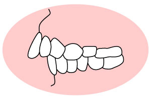 | 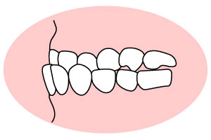 | 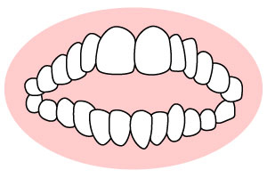 |
| いわゆる「出っ歯」です。前歯だけ、もしくは上の歯列全体が前に出ており、転んだときなどに口元をケガしやすくなります。 | いわゆる「受け口」です。下の歯列が上の歯列より前に出た状態。上下の顎の骨格に問題がある場合などに起こります。 | 上下の歯を咬み合わせても、前歯が閉じない状態です。「食べ物を咬み切りにくい」などの問題が生じます。 |
| 交叉咬合 （こうさこうごう） |
叢生 （そうせい） |
過蓋咬合 （かがいこうごう） |
| 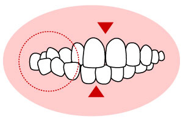 | 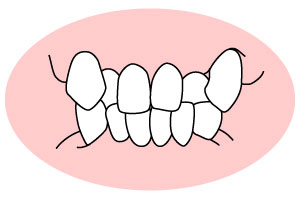 | 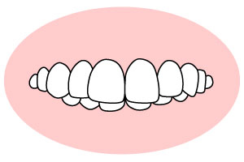 |
| 上下の歯列が部分的に交叉している状態です。これにより顎や顔がゆがむこともあります。 | 歯がデコボコに並んでいる状態であり、八重歯もその一種です。顎が小さく、歯がきちんと並ばずに起こることが多いです。 | 上の歯列が下の歯列を深く覆っている状態です。歯ぐきを傷つけやすかったり、食べ物を咬み切りにくかったりします。 |
成人矯正をお考えの方へ
かつて矯正治療は「子どもが受けるもの」というイメージもありましたが、近年では大人の方の矯正治療も一般的になっています。しかし「装置が目立つ」「治療期間が長い」などがネックになり、「なかなか治療にふみきれない……」という方もいるでしょう。
しかし目立たない矯正装置もたくさん登場しています。仕事柄人前に立つことの多い方も、比較的コンプレックスを感じず治療を受けられるようになりました。治療期間についても、できるだけ短くできる治療法を選ぶことが可能。まずはお気軽にご相談ください。
当院の矯正治療
当院は子どもから大人までの矯正治療に対応しています。一人ひとりの歯並び・咬み合わせの状態に合わせ、歯列全体の治療だけでなく、気になる一部分を改善する部分矯正もご提供可能です。
成人矯正については、矯正治療用のインプラントを埋め込んで行うインプラント矯正に力を入れています。従来の治療法とは異なり、これまで動かせなかった位置まで歯を移動できたり、成人の方でも歯列拡大を行って抜歯を回避したりできます。さらに口腔機能・呼吸機能の改善を目指すことも可能。
「大人だからもう遅い」と諦める前に、まずは一度ご相談ください。
院長が責任をもって対応します
当院で成人矯正を担当するのは、院長自身です。一般的に「月に1回来院する矯正専門医」に任せる歯科医院もありますが、この場合「予約が取りにくい」「虫歯は一緒に治療してもらえない」といったデメリットがあるでしょう。その点当院は常駐する院長が対応するため、患者様が通いやすい環境をご提供できます。
また、日ごろから患者様と接している院長だからこそ、一人ひとりにより適した矯正治療をご提供できます。併せて虫歯の管理やブラッシングのチェックも継続できるため、安心して矯正治療を任せられるでしょう。
矯正治療メニュー
表側矯正（ラビアル矯正）
歯の表側に装置を取り付けて行う矯正方法。比較的費用を抑えられるメリットがあります。一方装置が目立つデメリットも考えなくてはいけません。
裏側矯正（舌側矯正）
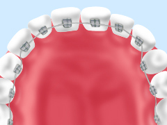
歯の裏側に装置を取り付けて行う矯正治療です。装置が表から見えないため、他人から矯正治療をしていることに気づかれません。ただし、すべての症例に適用できるものではありません。
メタルブラケット
もっとも一般的といえる、金属製の小さな装置「ブラケット」を歯の表面に取り付け、ワイヤーを通して歯を動かしていく治療法です。多くの症例に対応でき、比較的費用を抑えられます。
セラミックブラケット
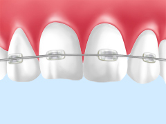
メタルブラケットと同じ構造で、セラミック製のブラケットを用いる方法です。セラミックの色を歯の白さに合わせられるため、目立ちにくくなります。
リンガルアーチ
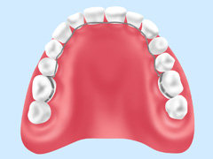
歯の裏側にワイヤーを固定して、顎の大きさを広げたり、歯を正しい位置に並べたりする治療法です。装置が表から見えないため、見た目が気になることがありません。
部分矯正
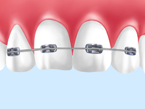
歯列全体ではなく、気になる一部分だけを正しく整える治療法です。歯列全体の治療よりも費用を抑えられ、治療期間も短縮できます。
インプラント矯正
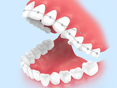
矯正治療用の小さなインプラントを顎の骨に埋め込み、それを固定源にしてワイヤーをかけ、歯を動かしていく治療法です。これまで動かしにくかった位置まで歯を移動できるなどのメリットがあります。